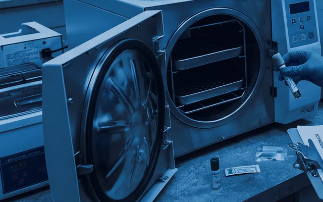

Waterline testing
We test the water flowing through your chair lines for bacteria, operatory by operatory.
- Samples from each dental unit
- Results in CFU/mL against the standard
Independent inspections for dental practices
Stay compliant and protect your license. One visit, one clear report.
We inspect and report. We don't sell, clean or repair equipment.
We look at the parts of your practice that are easiest to miss day to day, and write down exactly what we found.
We inspect and report. We don't sell, clean or repair equipment.
We test the water flowing through your chair lines for bacteria, operatory by operatory.

We walk through instrument processing and check your sterilizer monitoring records.
We review the paperwork and habits behind a safe workplace: records, safety data sheets and training.
Photos are illustrative.
Every item shows what we measured or reviewed, whether it meets the standard, and what to do next when it doesn't.
In Georgia? Quarterly waterline testing is now required (Georgia Board of Dentistry Rule 150-8-.05, as amended April 30, 2026).
Tell us about your practice and we'll explain what a visit covers. No obligation.
No sales pitch on the visit. We only inspect.
Eastern time, 15 minutes
Pick a day, then a time.
The short version of what practices ask us before a first visit.
Your dental unit waterlines, your infection control and sterilization records, and your OSHA-related safety paperwork. You get one written report of what passed and what needs fixing.
Georgia’s Board of Dentistry rule requires every dental unit waterline to be tested quarterly, and again within 30 days of any repair or plumbing change.
500 CFU/mL or less. That’s the EPA drinking-water standard the Georgia rule uses.
The rule requires immediate remedial action. We tell you exactly which line failed and what the rule asks for next. We don’t sell, clean or repair equipment, so our results stay independent.
No. We’re an independent company. We help you find problems before an official inspection does.